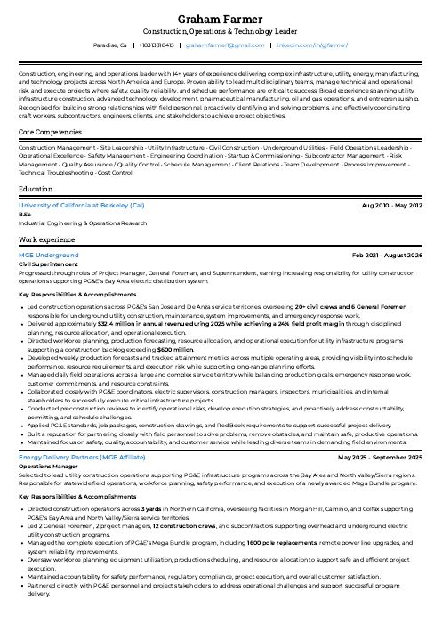
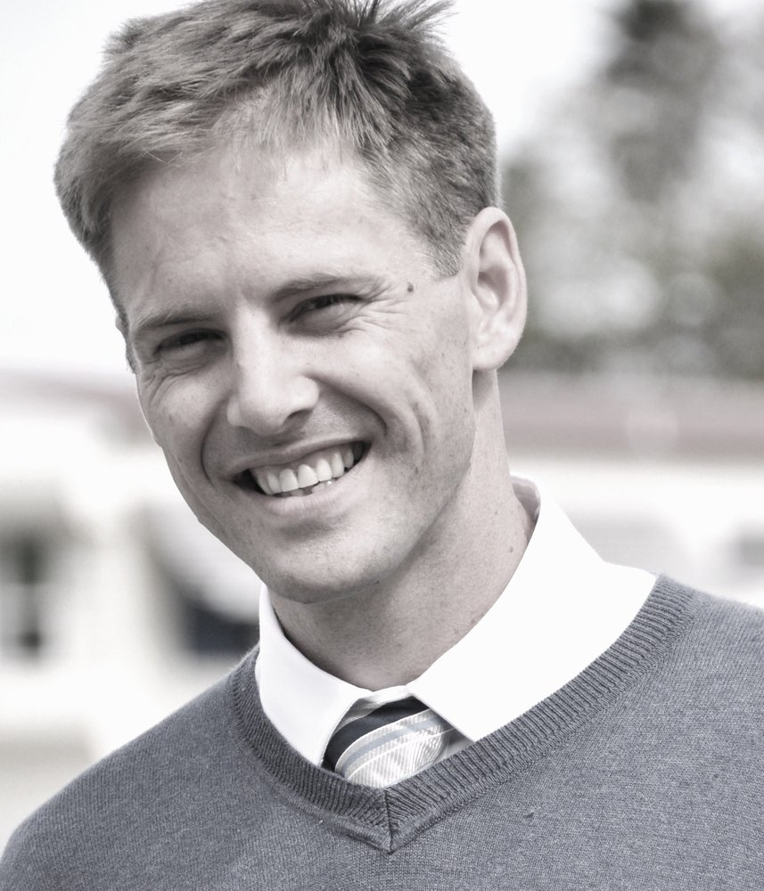
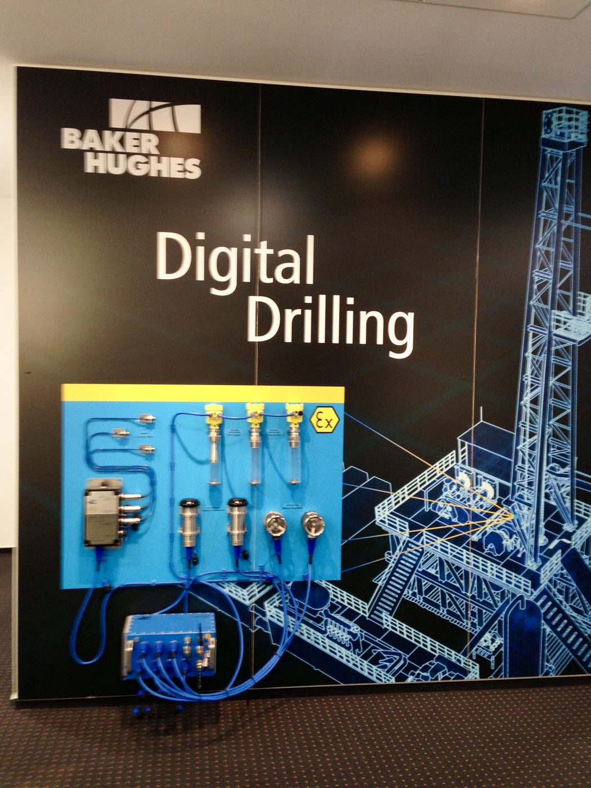
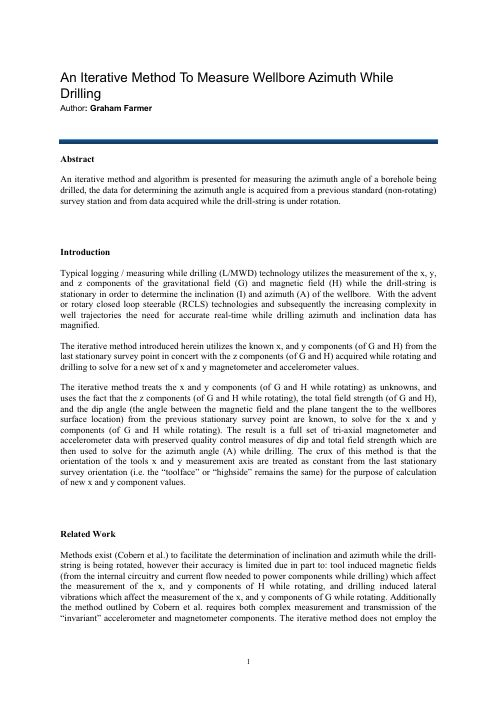
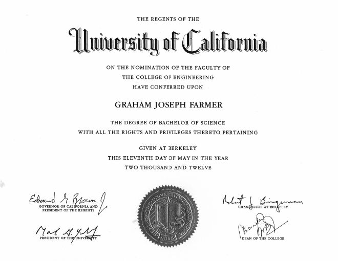

Construction · Operations · Technology
Graham Farmer
I lead complex field operations where safety, reliability and the schedule all matter. I have run multi-crew utility construction programs for PG&E and managed $3M+ drilling programs. I have also helped bring drilling-automation technology to market.

$32.4M
Annual revenue delivered, Bay Area civil operations (2025)
24%
Field profit margin achieved (2025)
$600M+
Utility construction backlog supported
1,600
Pole replacements in PG&E's Mega Bundle program
Profile
An engineer's discipline, a superintendent's command of the field
My career covers utility infrastructure, upstream oil and gas, and advanced drilling technology. In each, I have led multidisciplinary teams through high-consequence work. Most recently, I directed PG&E electric distribution construction across the San Jose and De Anza territories. I oversaw 20+ civil crews and six General Foremen, and I was accountable for production, forecasting, safety and financial results.
Before that, I founded and ran a drilling-operations consultancy for California Resources Corporation, with zero recordable incidents. I also spent seven years at Baker Hughes, rising from Field Engineer to Senior Field Test Engineer. That included an international assignment in Germany commercializing a semi-autonomous rotary steerable drilling system.
I build strong relationships with field personnel, I spot problems early, and I coordinate crews, subcontractors, engineers, clients and regulators toward a single plan.
- Construction Management
- Utility Infrastructure
- Field Operations Leadership
- Safety Management
- Workforce Planning & Forecasting
- P&L / Cost Control
- Risk Management
- QA / QC
- Startup & Commissioning
- Subcontractor Management
- Technology Commercialization
- Process Improvement
Experience
Career Experience
Leadership that grew from engineering in the field, to running sites, to directing multi-territory operations.
-
MGE Underground
Civil Superintendent · previously General Foreman & Project Manager
Feb 2021 – Aug 2026
- Led construction operations across PG&E's San Jose and De Anza territories, overseeing 20+ civil crews and 6 General Foremen. The work covered underground construction, maintenance, system improvements and emergency response.
- Delivered $32.4M in 2025 revenue at a 24% field profit margin through disciplined planning and resource allocation.
- Directed workforce planning and production forecasting for programs supporting a $600M+ backlog, giving leadership visibility into schedule, resources and execution risk.
- Ran preconstruction reviews to catch constructability, permitting and schedule risks before mobilization.
-
Energy Delivery Partners MGE affiliate
Operations Manager
May 2025 – Sep 2025
- Selected to lead operations across 3 Northern California yards (Morgan Hill, Camino, Colfax) supporting the Bay Area and North Valley/Sierra regions.
- Led the full execution of a newly awarded PG&E Mega Bundle program: 1,600 pole replacements, remote power line upgrades and reliability improvements.
- Managed 2 General Foremen, 2 project managers, 12 crews and subcontractors across overhead and underground electric work. I was accountable for safety, compliance and customer satisfaction.
-
Wellsite Solutions, Inc. Founder
Drilling Site Manager · Consultant to California Resources Corporation
Feb 2019 – Mar 2020
- Founded and ran a consultancy serving as the operator's on-site representative across the San Joaquin Basin (Elk Hills, Wheeler Ridge, Pleito Ranch).
- Delivered wells with individual capex above $3M on schedule and under budget, leading teams of 40+ contractors, engineers and service personnel.
- Built a safety culture that achieved zero recordable incidents and full regulatory compliance.
-
Baker Hughes
Senior Field Test Engineer · Directional Driller · Field Engineer I–V
Jul 2012 – Feb 2019
- Advanced from Field Engineer I to Senior Field Test Engineer, working in Oklahoma, Texas, Southern California, the Deepwater Gulf of Mexico and Germany.
- Selected for an international technology assignment in Celle, Germany to commercialize a next-generation semi-autonomous rotary steerable system.
- Authored field validation protocols and acceptance criteria. I also supervised beta and commercial field trials before release.
- Developed a navigation algorithm for real-time wellbore azimuth while drilling (see Innovation).

Innovation
An Iterative Method to Measure Wellbore Azimuth While Drilling
Older methods estimate azimuth while the drill string rotates. In practice, they are limited by tool-induced magnetic interference and lateral vibration. My approach uses only the axial (z-axis) readings taken while drilling, together with the last stationary survey. It iteratively rotates the survey vectors until they converge on the measured values. The result is a full tri-axial data set with quality control preserved. It also removes the need to measure and transmit the noisy cross-axial data.
1.47°deviation after 3,593 ft drilled from a single survey point
Gulf of Mexicovalidated on real well data, including a magnetic “no-go” zone
Lower costless to measure, transmit, design and maintain
Education
University of California, Berkeley
B.S., Industrial Engineering & Operations Research
College of Engineering · Conferred May 2012
Studied optimization, systems engineering, statistics, logistics and quantitative decision-making. I put that foundation to work every day in forecasting, resource allocation and process improvement. I worked through college building clean rooms for Silicon Valley semiconductor facilities.
View diploma (PDF) →Portfolio
In the Field
From deepwater platforms and drilling-technology labs to PG&E utility construction across Northern California.
Documents
Credentials & Downloads

Technical Paper
An Iterative Method to Measure Wellbore Azimuth While Drilling. 10 pages.

Contact
Let's talk about your next project
Open to senior operations, construction and program leadership roles. Based in Northern California. Willing to relocate to TX, NC, or FL